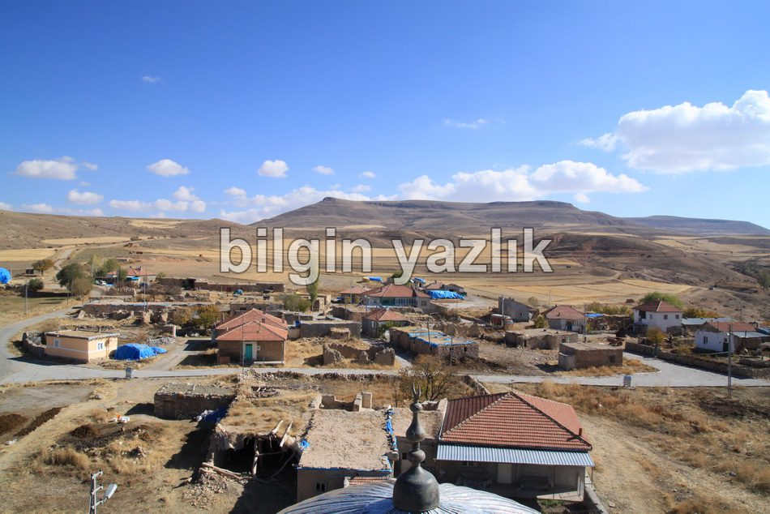
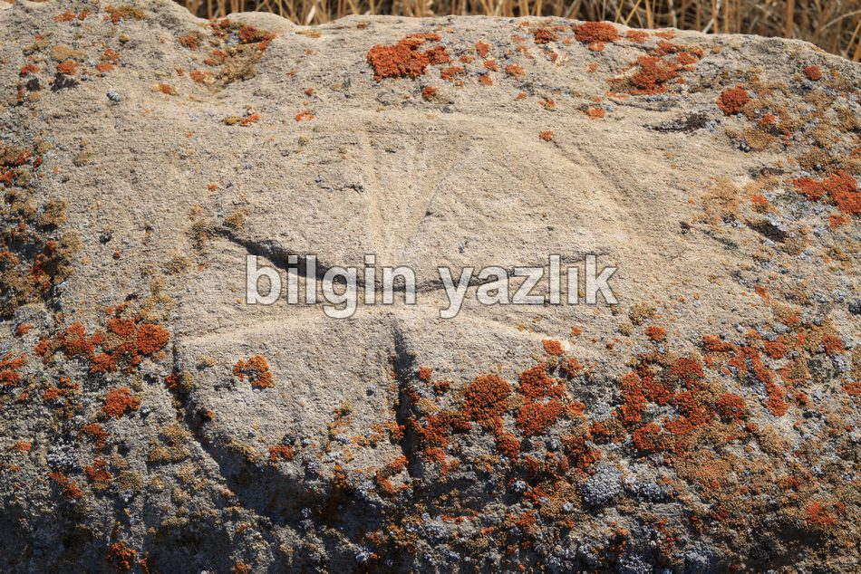
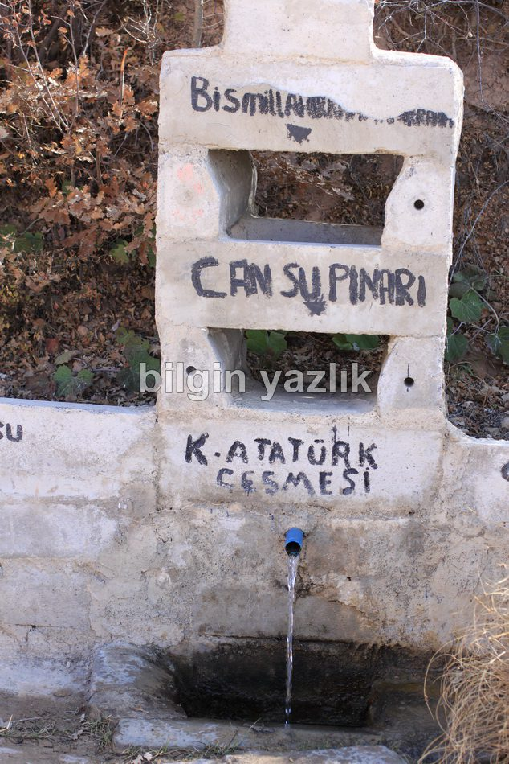
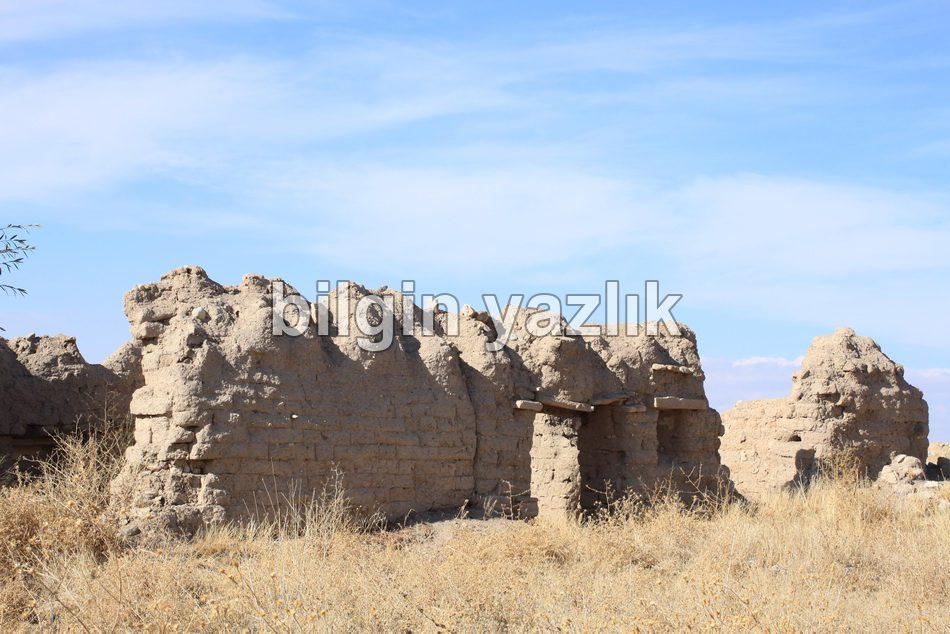

Gigi (Danişmend) Köyü
Eski adı ile Gigi yeni adı ile Danişmend Köyü, Kayseri’nin doğusunda Bünyan ilçesi sınırları içerisinde yer alıyor. Köyde hali hazırda 5-10 tanesi dört mevsim barınan toplamda 10-15 hane bulunuyor. Köy, 1940’lara kadar çok sayıda Ermeni aileye ev sahipliği yapıyormuş, Ermeniler hala yaz aylarında köylerini ziyarete geliyorlar, şu an Amerika ve Fransa’da yaşadıklarını köylüler anlatıyorlar. Köyde Ermenilere ait bir Hristiyan mezarlığı da bulunuyor. Köyde hala ayakta olan az sayıda eski kerpiç ev de görülmeye değer. Köy her ne kadar kıraç bir arazide kurulu olsa da, köyün bulunduğu tepenin eteklerinde tatlı su kaynağı (Atatürk Çeşmesi) ve ormanlık bir alan bulunuyor. Asfalt yol, Gigi köyüne varınca son buluyor ve köyden öteye (Emir Ören) ancak stabilize yoldan ulaşılabiliyor. Ermeniler döneminde aktif olarak kullanılan kilisenin üstüne ev yapılmış, kilise duvarlarında kullanılan taşlar mezarlık kapısına taşınmış. Köyde aktif bir cami ve pasif bir okul bulunuyor.




Bu yazı taliyol arşivinden taşınmıştır. · özgün kayıt